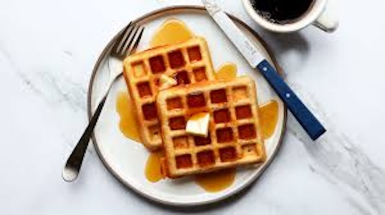

jump to recipe
This waffle recipe has been a weekend tradition in our family for as long as I can remember. It originated with my grandfather, who learned it from his mother in Belgium. Every Sunday morning, he would fire up the old waffle iron, filling the house with the comforting aroma of vanilla and toasted batter. Over the years, we’ve kept his original recipe alive, savoring its light, crisp texture and rich flavor as a way to stay connected to our roots and create new memories around the breakfast table.
These waffles taste like a hug from the past and a promise for the future,
my dad would always say as he piled his plate high, reminding us of the family legacy behind every bite.
Here are some tips on how to not mess this recipe and make the Waffles just how we do it.
Tip: Substitute regular milk with buttermilk for a tangy flavor and tender texture. The acidity in buttermilk reacts with the baking soda or powder, giving the waffles a better rise.
| INGREDIANTS | AMOUNT |
|---|---|
| all purpose flour | 2 2 cups |
| salt | 1 teaspoon |
| baking powder | 4 teaspoons |
| white sugar | 2 table spoons |
| eggs | 2 |
| warm milk | 1 1/2 cups |
| melted butter | 1/3 |
| vanilla extract | 1 teaspoon |
1:Gather all ingredients.
2:Mix flour, salt, baking powder, and sugar together in a large bowl; set aside. Preheat waffle iron to desired temperature.
3:Beat eggs in a separate bowl; stir in milk, butter, and vanilla.
4:Pour milk mixture into flour mixture; beat until blended.
5:Ladle batter into a preheated waffle iron.
6:Cook waffles until golden and crisp.
7:Serve immediately and enjoy!